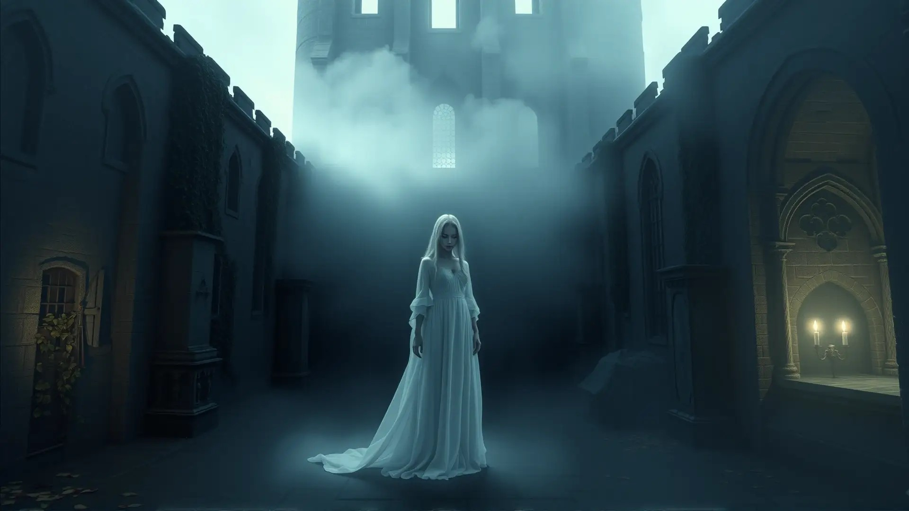

La dama de blanco

Desde hace más de cuarenta años, distintos vecinos de la Mansión Victoriana aseguran haber visto a una mujer vestida de blanco caminando lentamente entre los rosales del jardín trasero, siempre pasada la medianoche.
Según los registros de la propia mansión, la figura coincidiría con la esposa del primer dueño de la propiedad, quien según se cuenta nunca llegó a mudarse oficialmente... porque nunca se fue.
Los actuales interesados en comprar la propiedad destacan este detalle como un plus: "no todos los días se compra una casa con compañía incluida", comentó un futuro comprador durante la visita guiada.